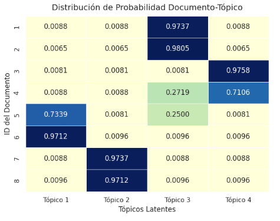

Almacenes y Mineria de Datos
2026-05-29
Term Frequency - Inverse Document Frequency
TF-IDF es una técnica de minería de texto que mide qué tan importante es una palabra dentro de un documento, comparándola con los demás documentos de una colección.
Convierte texto en valores numéricos, lo que permite analizar documentos con algoritmos de minería de datos y aprendizaje automático.
TF-IDF
TF = Frecuencia del término
IDF = Frecuencia inversa en documentos
Si solo contamos frecuencia, podemos pensar que la palabra más repetida siempre es la más importante.
Pero eso no siempre es cierto:
Una palabra puede aparecer muchas veces porque es común en todos los textos, no porque describa bien un documento específico.
TF-IDF no busca solo la palabra más repetida.
Busca la palabra que mejor representa a un documento frente a los demás.
Aparece mucho
en este documento
Aparece poco
en los demás
=
Palabra
representativa
TF mide cuántas veces aparece una palabra en un documento.
Por ejemplo:
Si la palabra “gasolina” aparece muchas veces en un texto, su TF será alto.
Una forma simple de calcularlo es:
\[TF(t,d) = \frac{\text{número de veces que aparece } t \text{ en } d}{\text{total de términos en } d}\]
IDF mide qué tan común o rara es una palabra en toda la colección de documentos.
Si “gasolina” aparece en pocos documentos, su IDF será alto.
Una forma común de calcularlo es:
\[IDF(t) = \log \left(\frac{N}{DF(t)}\right)\]
Donde N es el número total de documentos y DF(t) es el número de documentos que contienen el término.
El peso final combina las dos ideas:
\[TF\text{-}IDF(t,d) = TF(t,d) \times IDF(t)\]
Idea clave: una palabra tiene mayor peso si aparece mucho en un documento, pero aparece poco en los demás.
Primero se parte del texto completamente crudo.
| ID | Documento |
|---|---|
| 1 | El presidente anunció nuevas medidas para mejorar el abasto de gasolina en varias ciudades del país. El plan de abasto incluye distribución de gasolina, supervisión de precios y coordinación con estaciones de servicio. |
| 2 | La falta de gasolina provocó largas filas en estaciones de servicio durante la mañana. En varias estaciones las filas crecieron porque la gasolina llegó tarde y los conductores esperaron durante horas. |
| 3 | Universidades públicas solicitaron mayor presupuesto para investigación, educación y becas estudiantiles. Los rectores señalaron que el presupuesto universitario sostiene laboratorios, proyectos de investigación y programas de becas. |
| 4 | El presupuesto nacional contempla apoyos para universidades, hospitales y programas sociales. La propuesta de presupuesto aumenta recursos para hospitales públicos, becas sociales y programas de atención comunitaria. |
| 5 | La Guardia Nacional reforzó la seguridad en carreteras y zonas con reportes de robo de combustible. El operativo de seguridad vigila carreteras, ductos y estaciones para reducir el robo de gasolina. |
| ID | Documento |
|---|---|
| 6 | Trump defendió la construcción del muro fronterizo durante un discurso ante sus simpatizantes. En el discurso, Trump insistió en que el muro fronterizo era necesario para controlar la migración. |
| 7 | El gobierno mexicano respondió a las declaraciones de Trump sobre migración y seguridad fronteriza. La respuesta del gobierno señaló que la migración debe atenderse con cooperación, seguridad fronteriza y diálogo diplomático. |
| 8 | Estudiantes universitarios protestaron por recortes al presupuesto de educación pública. La protesta estudiantil exigió más presupuesto, becas, investigación y apoyo para universidades públicas. |
| 9 | Autoridades investigan una red dedicada al robo de gasolina en ductos del centro del país. La investigación ubicó ductos clandestinos, venta ilegal de gasolina y vehículos usados para transportar combustible robado. |
| 10 | El presidente se reunió con rectores para discutir presupuesto, investigación y desarrollo tecnológico. En la reunión se habló de presupuesto universitario, proyectos de investigación, innovación tecnológica y becas para estudiantes. |
Antes de calcular TF-IDF, normalmente se eliminan stopwords: palabras muy comunes que se repiten mucho, pero aportan poco valor para identificar el tema de un documento.
Ejemplos de stopwords
¿Por qué eliminarlas?
Ayudan a construir frases, pero aparecen en casi cualquier texto y no suelen distinguir un documento de otro.
Si se quedan, pueden ocupar espacio en la matriz sin explicar realmente el contenido.
Idea clave: quitar estas palabras permite que TF-IDF se enfoque en términos con mayor valor descriptivo.
El texto se queda con palabras y frases más informativas.
| Documento | Antes | Después de limpiar |
|---|---|---|
| 2 | La falta de gasolina provocó largas filas en estaciones de servicio… | falta, gasolina, filas, estaciones, gasolina, tarde, conductores, horas |
| 3 | Universidades públicas solicitaron mayor presupuesto para investigación… | universidades, públicas, presupuesto, investigación, becas, rectores, laboratorios |
| 6 | Trump defendió la construcción del muro fronterizo durante un discurso… | trump, defendió, construcción, muro, fronterizo, discurso, migración |
Aquí todavía no hay importancia: solo tenemos términos listos para ponderar.
La falta de gasolina provocó largas filas en estaciones de servicio durante la mañana. En varias estaciones las filas crecieron porque la gasolina llegó tarde y los conductores esperaron durante horas.
| Término | TF-IDF |
|---|---|
| filas | 0.282687 |
| estaciones | 0.210243 |
| gasolina | 0.186921 |
| tarde conductores | 0.166960 |
| tarde | 0.166960 |
Universidades públicas solicitaron mayor presupuesto para investigación, educación y becas estudiantiles. Los rectores señalaron que el presupuesto universitario sostiene laboratorios, proyectos de investigación y programas de becas.
| Término | TF-IDF |
|---|---|
| investigación | 0.199350 |
| presupuesto | 0.199350 |
| becas | 0.199350 |
| sostiene laboratorios | 0.178061 |
| solicitaron mayor | 0.178061 |
Trump defendió la construcción del muro fronterizo durante un discurso ante sus simpatizantes. En el discurso, Trump insistió en que el muro fronterizo era necesario para controlar la migración.
| Término | TF-IDF |
|---|---|
| discurso | 0.298094 |
| muro fronterizo | 0.298094 |
| muro | 0.298094 |
| fronterizo | 0.298094 |
| trump | 0.253407 |
Una ponderación en TF-IDF no dice si una palabra es “buena” o “mala”, nos dice qué tan útil es ese término para describir un documento específico dentro de una colección. El valor sube cuando se combinan varias cosas:
Frecuencia local
El término aparece varias veces dentro del mismo documento.
Rareza global
El término no aparece en muchos documentos de la colección.
Diferenciación
El término ayuda a separar ese documento de los demás.
Idea clave: Un peso alto significa que esa palabra caracteriza bien a ese documento frente al resto.
TF-IDF no entiende el significado completo del texto: solo transforma documentos en pesos numéricos que indican qué términos los caracterizan mejor.
Por esta razon, Tf-IDF no clasifica ni genera temas, no agrupa documentos ni detecta contexto profundo por sí solo. Su valor aparece cuando esos pesos se usan como representación de entrada para otras tareas:
Como medida directa
Como insumo para modelos
La pregunta más importante al leer: ¿De qué trata el texto que leí?
Al contar con muchos textos, urge la necesidad de ordenarlos. ¿Qué mejor que organizar dichos textos en sus temas centrales?
La frecuencia de patrones en los textos se usan para asignar un tópico a cada documento.
Se define a un tópico como el tema de una conversación o una discusión. En este caso del procesado de textos, cuando hablemos de tópicos nos referiremos al tema del que trata un texto.
Consideraciones
En casos reales, los textos no tienen solo un tópico, tienen varios.
Los textos no siempre están limpios; todo está bien mal “escribido”.
Al ser esto una introducción al análisis de tópicos, tomamos un ejemplo simple y se omite un paso no tan pedagógicamente importante.
Una página web de tutoriales quiere clasificar sus guías en 4 categorías: Recetas de cocina, papiroflexia, alfarería y carpintería. Esta página cuenta con todos sus documentos en el mismo formato y sin ningún error ortográfico, ya que se lleva a cabo un proceso de revisión antes de la publicación de tutoriales.
| id_texto | texto |
|---|---|
| 1 | La receta de reposteria indica batir harina para el pastel. Mete el pastel al horno para terminar la receta. |
| 2 | Esta receta de chocolate lleva harina en el pastel. Calienta el pastel en el horno para tu receta. |
| 3 | El origami consiste en realizar un pliegue en el papel. Cada pliegue de papel genera una figura de origami. |
| 4 | Para el origami asiatico el pliegue de papel es vital. Arma una figura de papel usando el origami. |
| 5 | La ceramica artesanal usa arcilla en el torno. Tornea la arcilla para hacer una vasija de ceramica. |
| 6 | Trabajar la ceramica requiere poner arcilla sobre el torno. Gira el torno con arcilla y obtendras tu vasija de ceramica. |
| 7 | La carpinteria trabaja la madera del tablon. Corta el tablon de madera para construir el mueble de carpinteria. |
| 8 | En la carpinteria lijas la madera de cada tablon. Arma el mueble de madera en tu taller de carpinteria. |
Antes de hacer nuestro modelo, debemos de deshacernos de las cosas indeseables.
Párrafos/Saltos de línea/caracteres especiales: Ninguno nos revela nada acerca del texto
Stopwords: Palabras que le dan sentido al texto al conjugarse con otras palabras, pero solas no tienen sentido
Después del “podado” de cosas indeseables tenemos
| id_texto | texto_limpio |
|---|---|
| 1 | receta reposteria principal batir azucar harina pastel pastel dulce requiere hornear horno terminar receta |
| 2 | receta dulce chocolate debes mezclar azucar harina pastel prepara pastel dulce procede hornear horno receta |
| 3 | origami exige precision cada doblez papel realiza pliegue papel formar figura papiroflexia origami |
| 4 | papiroflexia cada doblez papel importante pliegue papel forma figura perfecta origami papiroflexia |
| 5 | alfareria artesanal debes moldear arcilla torno ceramica ayuda moldear arcilla formar vasija alfareria |
| 6 | moldear ceramica necesita paciencia torno arcilla usa alfareria moldear vasija ceramica |
| 7 | carpinteria necesitas madera pino tablon utiliza martillo madera armar mueble carpinteria |
| 8 | construye mueble madera habitacion carpinteria debes lijar tablon madera mueble |
Hacemos un DTM (una matriz con todas las incidencias de una palabra sobre todos los textos) y extraemos las columnas para saber todas las palabras usadas en los textos.
En el ejemplo tenemos 47 palabras puras.
Es un método que nos permite hacer la agrupación de textos desde 0.
Recibe todas las palabras puras únicas que se recopilaron, además de recibir como parámetro una K que es el número de categorías.
LDA asigna “pesos” (la probabilidad de que si una palabra reside en un texto cualquiera, este pertenezca a la categoría “X”) aleatorios en las palabras.
\[P(w \mid d) = \sum_{t=1}^{k} P(w \mid t) \times P(t \mid d)\]
Donde:
\(k\) es el número de tópicos con los que contamos.
\(P(w \mid d)\) es la probabilidad de que la palabra \(w\) aparezca en el documento \(d\).
\(P(w \mid t)\) es la probabilidad de que la palabra \(w\) esté asociada al tópico \(t\).
\(P(t \mid d)\) es la probabilidad de que el tópico \(t\) pertenezca al documento \(d\).
LDA ocupa este criterio para ajustar los pesos de cada palabra en cada tópico y la asignación de tópicos a cada documento.
Pasa palabra por palabra, documento por documento, ajustando probabilidades. Se pregunta: ¿Qué tan común es este tópico en este tutorial? y ¿Qué tan común es esta palabra en este tópico?.
Repite este escaneo miles de veces hasta que las palabras se agrupan de forma lógica. En nuestro ejemplo: Las palabras de cocina se atraen entre sí, las de papiroflexia hacen lo mismo, y las categorías se vuelven nítidas.
Número de pasadas que se le darán a los textos para ajustar los pesos.
Semilla para registrar un estado inicial.
Y la forma de análisis de los textos, batch es un análisis completo de todo el dataset, mientras que online lo hace por partes.
Al aplicar esto a nuestro ejemplo, podemos extraer datos útiles, como revelar cuáles fueron las palabras más relevantes para asignar tópico.
| Tópico | Palabras relevantes |
|---|---|
| Tópico 1 (Alfarería) | moldear, ceramica, arcilla, alfareria, vasija |
| Tópico 2 (Carpintería) | madera, carpinteria, mueble, tablon, debes |
| Tópico 3 (Recetas de cocina) | receta, pastel, dulce, harina, horno |
| Tópico 4 (Papiroflexia) | papel, origami, papiroflexia, pliegue, figura |
| id_texto | texto | tópico |
|---|---|---|
| 1 | La receta de reposteria indica batir harina para el pastel. Mete el pastel al horno para terminar la receta. | Tópico 3 (Recetas de cocina) |
| 2 | Esta receta de chocolate lleva harina en el pastel. Calienta el pastel en el horno para tu receta. | Tópico 3 (Recetas de cocina) |
| 3 | El origami consiste en realizar un pliegue en el papel. Cada pliegue de papel genera una figura de origami. | Tópico 4 (Papiroflexia) |
| 4 | Para el origami asiatico el pliegue de papel es vital. Arma una figura de papel usando el origami. | Tópico 4 (Papiroflexia) |
| 5 | La ceramica artesanal usa arcilla en el torno. Tornea la arcilla para hacer una vasija de ceramica. | Tópico 1 (Alfarería) |
| 6 | Trabajar la ceramica requiere poner arcilla sobre el torno. Gira el torno con arcilla y obtendras tu vasija de ceramica. | Tópico 1 (Alfarería) |
| 7 | La carpinteria trabaja la madera del tablon. Corta el tablon de madera para construir el mueble de carpinteria. | Tópico 2 (Carpintería) |
| 8 | En la carpinteria lijas la madera de cada tablon. Arma el mueble de madera en tu taller de carpinteria. | Tópico 2 (Carpintería) |
Nunca es buena idea entrenar modelos con poca información: Pocos datos implican mayor incertidumbre para el modelo.
Pocas palabras que coincidan pueden confundir al modelo, empeora si son pocas entradas
Se puede observar en la siguiente gráfica lo certero que estaba el modelo a la hora de asignar un tópico

La minería de textos permite inferir el sentimiento de quien escribe a partir de los documentos que produce.
La elección de palabras y la forma de usarlas dependen de la situación emocional del autor. El análisis trata de extraer esa información.
El problema: Dado un texto, determinar a qué sentimiento u opinión corresponde.
Análisis de polaridad: Clasifica en categorías (positivo/negativo, spam/no spam).
Análisis de emociones: Clasifica en múltiples sentimientos (felicidad, tristeza, miedo.).
En ambos casos, se trata de categorizar el documento automáticamente.
Uno de los problemas que enfrenta cualquier usuario del correo electrónico es la cantidad de mensajes no solicitados que se reciben diariamente: desde anuncios hasta intentos de fraude.
Los proveedores del servicio requieren un programa que clasifique el correo recibido para determinar si es correo basura o no.
La solución: construir un clasificador automático entrenado con correos ya etiquetados.
No se almacenan los mensajes completos. Se guarda la frecuencia relativa de 57 palabras discriminantes. Un valor de 0.43 en money significa que esa palabra representa el 43% del texto de ese correo.
Los datos se convierten a data frame (factor convierte categorías a variables nominales). Se dividen en 80% entrenamiento / 20% prueba. set.seed(150) garantiza que el muestreo sea reproducible.
naiveBayes() aprende qué frecuencias de palabras son típicas del spam y cuáles del correo legítimo. La fórmula type ~ . significa: “predice type usando todas las demás columnas”.
confusionMatrix() compara las predicciones contra las etiquetas reales.
| Predicho: nospam | Predicho: spam | |
|---|---|---|
| Real: nospam | 545 ✓ | 49 ✗ |
| Real: spam | 117 ✗ | 249 ✓ |
Se puede utilizar para clasificar correo con un buen nivel de respuesta.
Se tienen los discursos a la Nación de los últimos cinco presidentes de EE.UU. (1989–2020).
Objetivo: ¿Los discursos han sido positivos o negativos?
Un tibble es una tabla donde cada fila es una palabra del discurso.
El diccionario Bing clasifica palabras como positivas o negativas.
Proceso:
Tokenizar (una palabra por fila)
Cruzar con Bing → solo palabras conocidas
Contar positivas y negativas
Calcular positive - negative → puntaje
BushJr_2001.txt: 91 negativas, 231 positivas → puntaje: +140
Implementa los 4 pasos: leer → tokenizar → cruzar con Bing → calcular puntaje.
ObtieneSentimiento <- function(archivo) {
nomArch <- glue("TXT/", archivo)
# Leer el archivo y dividir en palabras individuales
tokens <- tibble(texto = read_file(nomArch)) %>%
unnest_tokens(word, texto) # 1 fila = 1 palabra
sentimiento <- tokens %>%
inner_join(get_sentiments("bing"), by = "word") %>% # Solo palabras en el diccionario
count(sentiment) %>% # Cuenta positivas y negativas
spread(sentiment, n, fill = 0) %>% # Crea columnas positive / negative
mutate(
sentimiento = positive - negative,
archivo = archivo,
year = as.numeric(str_extract(archivo, "\\d{4}")),
presidente = str_remove(archivo, "_\\d{4}\\.txt")
)
return(sentimiento)
}Clinton era muy positivo. Trump ha sido bastante negativo.
| Presidente | Tono |
|---|---|
| Clinton | Muy positivo |
| Obama | Positivo |
| Bush Jr. | Variable (2002 muy negativo) |
| Bush Sr. | Negativo |
| Trump | Bastante negativo |
El discurso de 2002 tiene la calificación más negativa: posterior al ataque a las Torres Gemelas en 2001.
Términos dominantes: terrorismo, guerra, Afganistán.
Las palabras tienen carga negativa en el diccionario, pero el mensaje es de condena. El modelo no entiende intención ni contexto.
El análisis de sentimientos permite extraer información emocional de textos usando técnicas simples: contar palabras, usar diccionarios, aplicar clasificadores.
Sin contexto profundo, el modelo es eficaz pero limitado: funciona bien para casos claros, pero puede fallar con sarcasmo, ironía o mensajes complejos como Bush en 2002.
Minería de Textos · TF-IDF